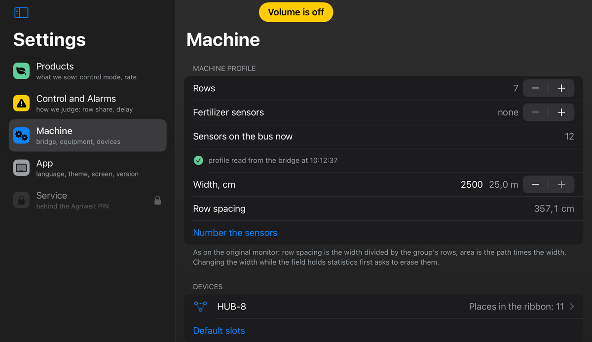

Einstellungen
Die fünf Gruppen der Einstellungen — Produkte, Überwachung und Alarme, Maschine, App, Service — und was in jeder steckt.
Öffnen Sie die Einstellungen mit dem Zahnrad rechts in der oberen Leiste oder mit „Einstellungen“ in der Tab-Leiste eines iPhone. Auf einem iPad stehen die Gruppen als Liste links und die offene Gruppe rechts; auf einem iPhone öffnet sich eine Gruppe über der Liste. Eine Änderung wirkt sofort — es gibt keine Speichern-Taste.

- „Produkte“ — was wir säen: der Überwachungsmodus, die Fraktion, die Sollmenge. Produkte
- „Überwachung und Alarme“ — wie die Reihen bewertet werden: der Anteil säender Reihen, die Alarmverzögerung, die Toleranz, der Summer. Überwachung und Alarme
- „Maschine“ — das Maschinenprofil, die Geräte, die Fahrgasse und das Gateway. Sie ist hier geöffnet. Maschine
- „App“ — Sprache, Ton der Tasten, Bildschirm, Startseite, Hilfe und Version. App
- „Service“ — gesperrt, für den Agriwelt-Service.
- „Maschinenprofil“ — die Reihen und die Düngersensoren. Das Maschinenprofil einrichten
- Die Statuszeile des Profils — was das Gateway geantwortet hat, hier „Profil von der Brücke gelesen um“ und die Uhrzeit.
- „Sensoren nummerieren“ — Die Sensoren nummerieren
- HUB-8 — die Geräte der Maschine. HUB-8-Eingänge
Die Einstellungen, die das Gateway kennen muss — das Profil, die Fraktion, die Sollmenge —, sendet die App an das Gateway. Solange die Verbindung zum Gateway unterbrochen ist, sind der Überwachungsmodus, die Fraktion und die Sollmenge ausgegraut, und die Sensoren lassen sich nicht nummerieren.
Ihre Maschine tut etwas, das diese Seite nicht beantwortet? Schreiben Sie an support@agriwelt.com — es antwortet ein Ingenieur.